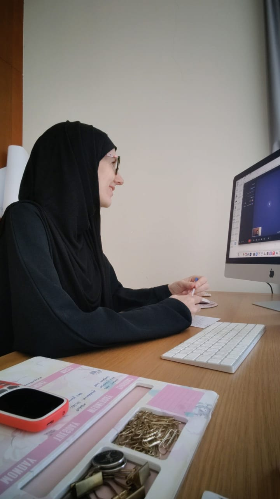

Your faith belongs here.
Prayer, fasting, halal food, and teachings from the Sunnah can be part of the conversation, alongside the everyday rhythms of your family.
A SANCTUARY FOR YOUR WELLBEING
A healthier rhythm for your life.
Personal health coaching for Muslim mothers, rooted in the Sunnah and shaped around your everyday life.
Book your free discovery call ↗Up to 30 minutes · Online · A chance to get to know each other

YOU DESERVE CARE, TOO
Between family, a busy mind, and everything on your list, it’s easy for your own wellbeing to keep waiting.
This is a space to pause, feel heard, and find small changes that fit your life. You don’t have to have it all figured out before you begin.
THE WAY WE WORK TOGETHER
There is no perfect routine to follow. Together, we’ll find a way of caring for yourself that honours your faith, your goals, and the season you’re in.
Prayer, fasting, halal food, and teachings from the Sunnah can be part of the conversation, alongside the everyday rhythms of your family.
We start with your energy, responsibilities, and available time. Small, manageable steps can make space for your wellbeing.
Food, movement, sleep, and stress are pieces of a bigger picture. You’ll have support to explore what works for you, without restrictive rules.
Muslim mothers are at the heart of this work. All women are welcome.
WAYS TO WORK WITH ME
A single conversation or a little more companionship along the way. We can explore the right starting point on your free discovery call.
ONE STEP AT A TIME
Book as you go
A little space to talk through a specific challenge, or try coaching before committing.
300 AED
Let’s talk about it ↗A GENTLE BEGINNING
One month
Find clarity, realign your priorities, and begin building a rhythm that works for you.
850 AED
Find your starting point ↗ROOM TO GROW
Three months
Ongoing encouragement as you grow your confidence and make healthy habits part of daily life.
2,000 AED
Explore ongoing support ↗Online via Google Meet · Sessions in English & German · In-person sessions by arrangement
A MOTHER. A COACH. SOMEONE WHO UNDERSTANDS.
I’m a certified Health Coach and mum of three. I know how easily we put ourselves last, even when we know we need a little care too.
My own journey through motherhood, faith, and finding balance is what brought me here. Inspired by my Nonna’s care and teachings from the Sunnah, I’m here to help you find what works for you.
A little more about me ↗BEGIN WITH A CONVERSATION
Choose a time that suits you. We’ll meet online for up to 30 minutes.
Share your challenges, hopes, and what you’d like support with.
We’ll see whether we’re a good fit and discuss the support that feels right.
Health coaching supports sustainable lifestyle changes tailored to your circumstances. Depending on your goals, we may explore food, movement, sleep, stress, and daily routines.
We’ll work with your circumstances and start with realistic steps. Coaching should support your everyday life, rather than add another demanding routine.
No. We work with your goals and interests. Food is your friend, and our focus is on sustainable habits that feel manageable for you.
Muslim mothers are my primary audience, and my approach considers a Muslim lifestyle. Women of every background are welcome; we’ll shape coaching around your own values and goals.
Usually online via Google Meet, in English or German. If you would prefer in-person sessions, let me know during our discovery call.
No. “It Takes a Village” is optional, and I’ll ask your permission before adding you.
No. Health coaching offers education and lifestyle support, not medical advice, diagnosis, or treatment. Please consult your healthcare professional about medical concerns and decisions.
LET’S MEET BEFORE WE BEGIN
A little time to meet, talk about what you need,
and see whether we’re a good fit.